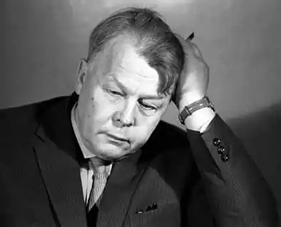
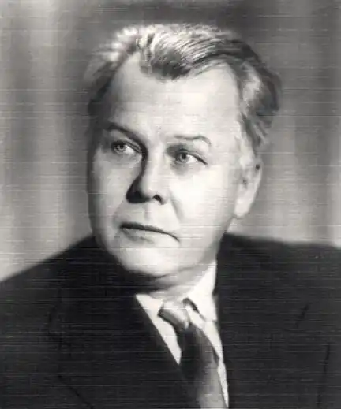
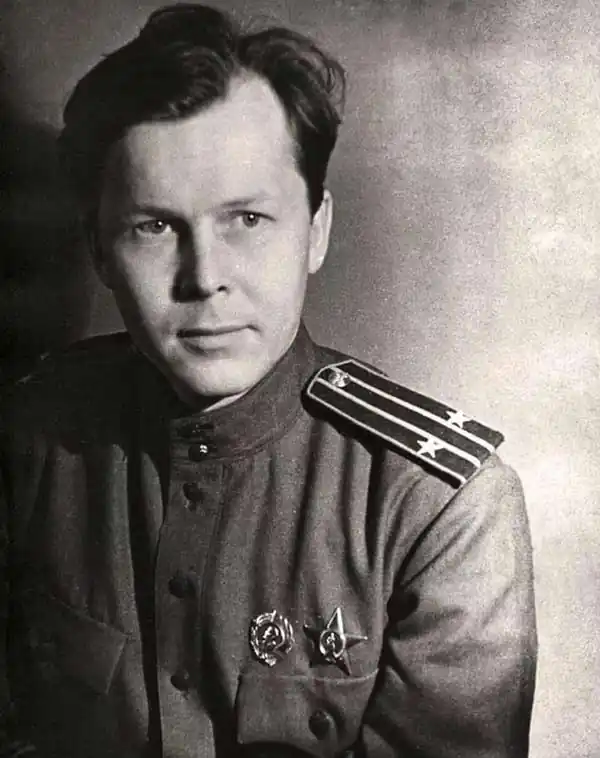

(1910 – 1971)
Батьківщиною А. Т. Твардовського вважають хутір Загір'я Смоленської губернії. Кажучи коротко Твардовський був сином коваля, який у свою чергу був надзвичайно освіченою і досить грамотним. Ще в дитинстві маленький Сашко був знайомий з такими видатними діячами літератури як Гоголь, Пушкін, Лермонтов – всі ці книги були в бібліотеці батька.
Однак незабаром, Трифона Твардовського розкуркулили і вислали на північ. Вже в 14 років Твардовський почав слати свої записи в багато смоленські журнали. Советско —російський поет Ісаковський, в той час будучи редактором журналу "Робочий шлях", надав підтримку юному даруванню і допоміг Олександру Твардовскому опублікувати свої нотатки. Після закінчення школи для письменника настав важкий період. Виявилося, що не так-то просто влаштуватися на роботу і знайти собі заробіток без гідної освіти. Твардовський довго блукав по редакціях зі своїми статтями, але практично скрізь йому відмовляли в публікації. Те ж повторилося і в Москві. Твардовський, коротка біографія по поверненню в Смоленськ. У 1930 році А. Т. Твардовський повертається в рідні пенати і надходить на педагогічну спеціальність в інститут, однак, навчання він не закінчив, кинув навчання в цьому інституті з 3 курсу і диплом але все ж доотримав його в Москві. 1931 рік – публікація самої ранньої поеми Твардовського "Шлях до соціалізму". Однак знаменитим Твардовський стає лише після того, як побачила світ його поема "Країна Муравия", в якій головний герой Моргунок шукає країну вічного щастя. За це незвичайне твір А. Твардовського нагородили Державною премією. Після виходу поеми видається кілька збірок Твардовського – "Дорога", "Сільська хроніка", "Загір'я". У 1941 році Твардовський починає масштабну роботу над найбільшою поема "Василь Тьоркін", яка досі не втратила своєї популярності. Публікувалася поема по главам. Перші глави публікувалися в журналі "Червоноармійська зірка" (1942). Останній варіант поеми, яку закінчив писати в 1945 році, і Василь Тьоркін по-справжньому став народним героєм. Книга стала популярною у відомих літературних колах, Твардовський був нагороджений Державною премією. Крім "Василя Тьоркіна", писалася також поема "Будинок у дороги", закінчена в кінці війни. Паралельно зі стихотворческой діяльністю, А. Твардовський писав прозу – "Батьківщина і чужина", книга про війну. Про Твардовском коротко може сказати журнал "Новий світ", редактором якого він був. 18 грудня 1971 року А. Твардовського не стало, він помер в результаті важкої хвороби.